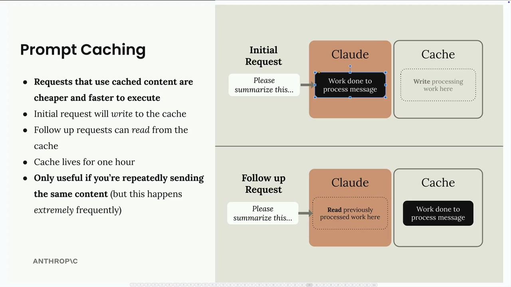
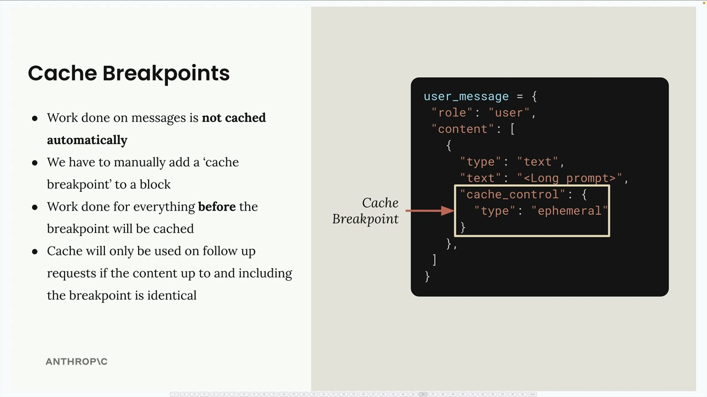
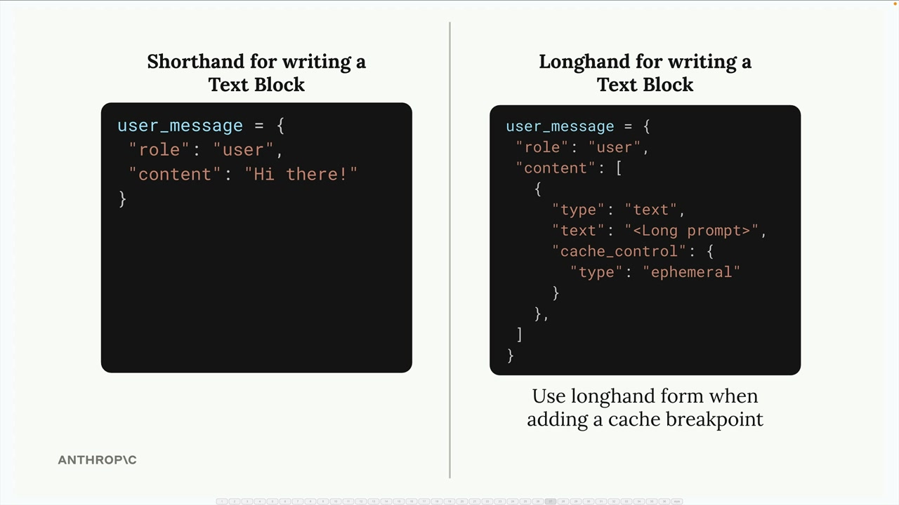
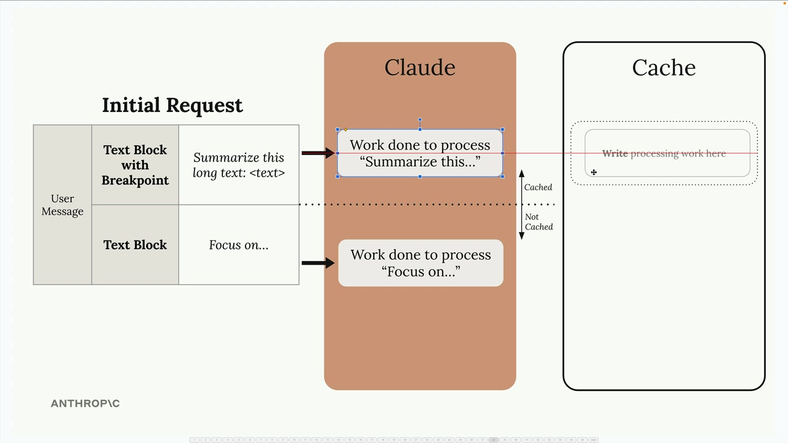
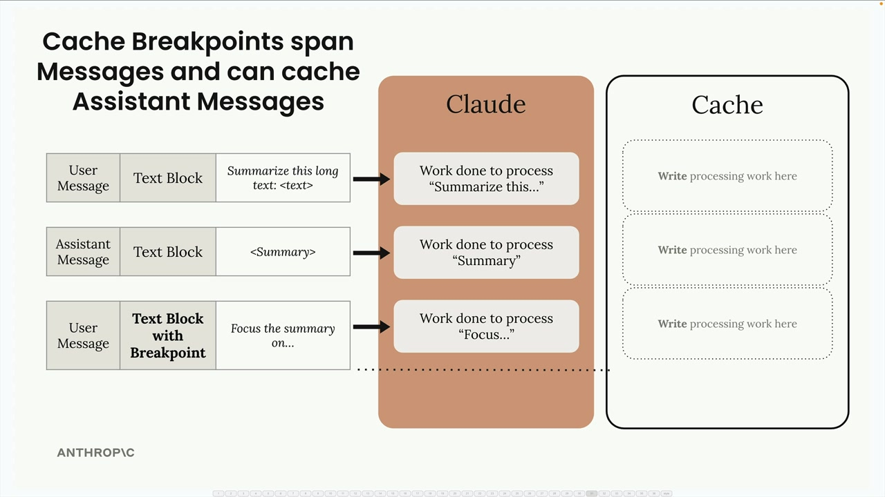
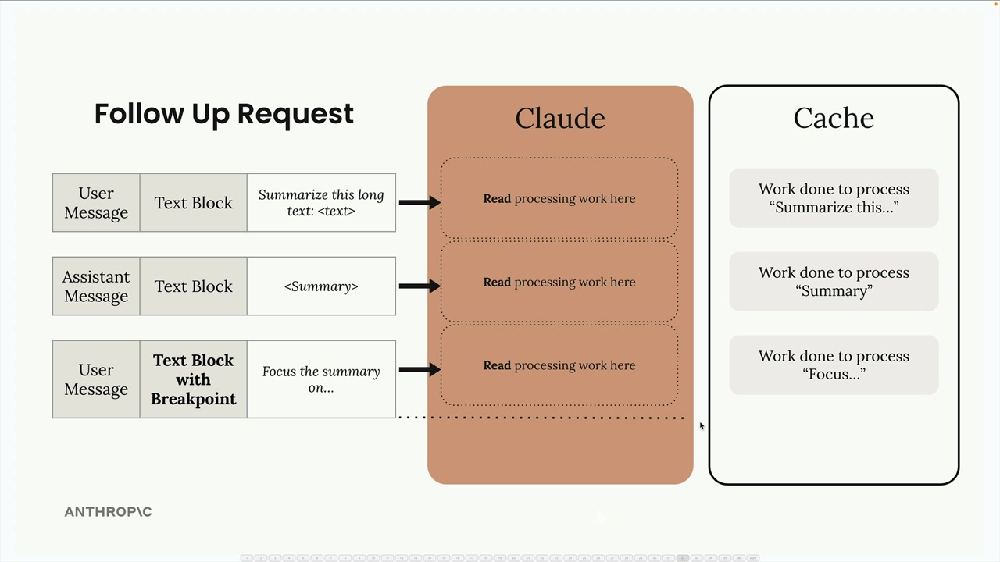
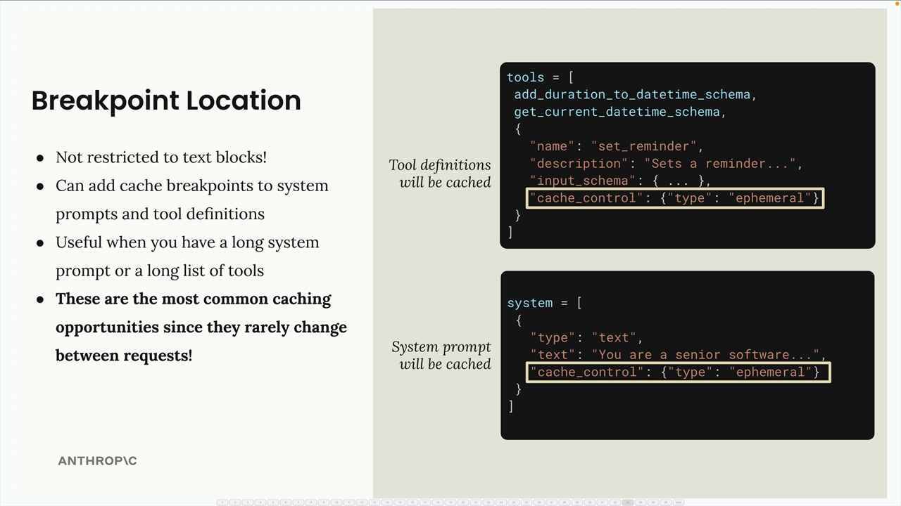
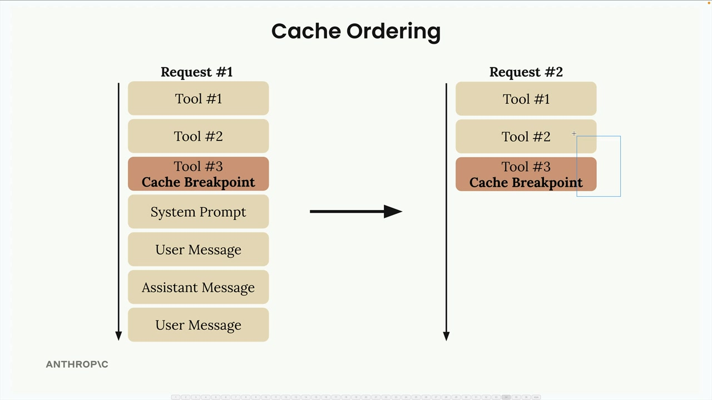
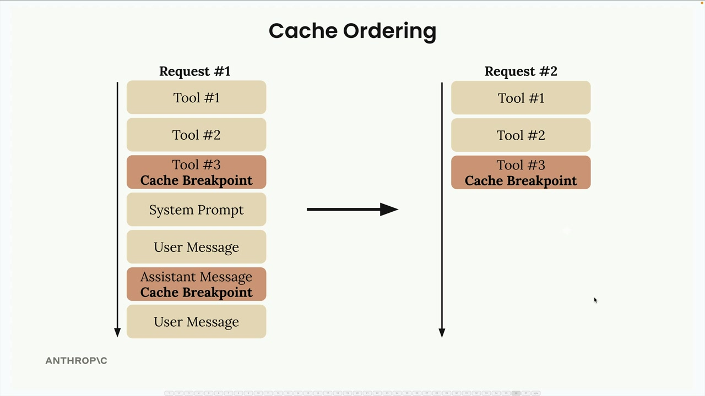
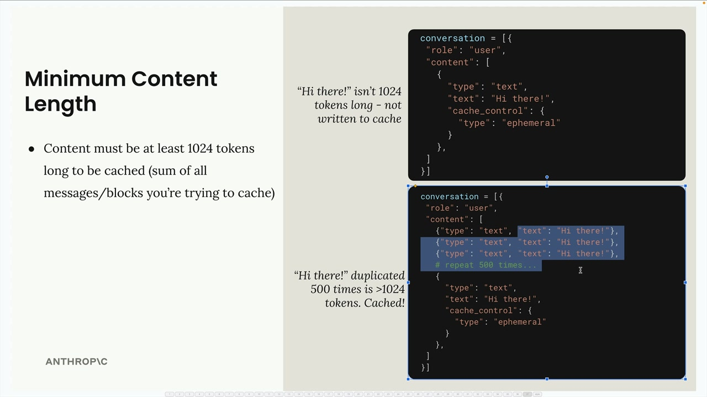

프롬프트 캐싱의 규칙
Claude의 프롬프트 캐싱은 메시지에 대해 수행된 연산 작업을 저장하여 후속 요청에서 재사용할 수 있도록 하는 방식으로 동작합니다. 이를 통해 후속 요청을 더 빠르고 저렴하게 처리할 수 있지만, 동일한 내용을 반복적으로 전송하는 경우에만 효과가 있습니다.

프로세스는 간단합니다: 초기 요청이 처리 작업을 캐시에 기록하고, 후속 요청은 동일한 내용을 다시 처리하는 대신 해당 캐시에서 읽어올 수 있습니다. 캐시는 1시간 동안 유지되므로, 이 기능은 해당 시간 내에 동일한 내용을 반복적으로 전송할 때만 유용합니다.
캐시 중단점
캐싱은 자동으로 활성화되지 않습니다 - 메시지의 특정 블록에 캐시 중단점을 수동으로 추가해야 합니다. 작동 방식은 다음과 같습니다:
- 메시지에 대한 처리 작업은 자동으로 캐시되지 않습니다
- 블록에 '캐시 중단점'을 수동으로 추가해야 합니다
- 중단점 이전의 모든 처리 작업이 캐시됩니다
- 중단점까지의 내용이 동일한 경우에만 후속 요청에서 캐시가 사용됩니다

캐시 중단점을 추가하려면 단축 형식 대신 텍스트 블록을 작성하는 전체 형식을 사용해야 합니다:

단축 형식은 캐시 제어 필드를 추가할 공간을 제공하지 않으므로, cache_control 필드를 {"type": "ephemeral"}로 설정한 확장 형식을 사용해야 합니다.
캐시 중단점의 동작 방식
메시지에 캐시 중단점을 배치하면 Claude는 해당 중단점까지의 모든 처리 작업을 캐시합니다. 중단점 이후의 내용은 캐싱 없이 정상적으로 처리됩니다.

캐시가 후속 요청에서 유용하게 사용되려면 중단점까지의 내용이 동일해야 합니다. "please"라는 단어를 추가하는 것과 같은 작은 변경도 캐시를 무효화하여 Claude가 모든 것을 다시 처리하게 만듭니다.

메시지 간 캐싱
캐시 중단점은 여러 메시지와 메시지 유형에 걸쳐 적용될 수 있습니다. 나중 메시지에 중단점을 배치하면, 이전의 모든 메시지(사용자, 어시스턴트 등)가 캐시된 내용에 포함됩니다.

이는 특정 지점까지의 전체 컨텍스트를 캐시하려는 대화에서 특히 유용합니다.
시스템 프롬프트와 도구
텍스트 블록에만 국한되지 않습니다 - 캐시 중단점은 다음에도 추가할 수 있습니다:
- 시스템 프롬프트
- 도구 정의
- 이미지 블록
- 도구 사용 및 도구 결과 블록

시스템 프롬프트와 도구 정의는 요청 간에 거의 변경되지 않으므로 캐싱에 적합한 후보입니다. 프롬프트 캐싱에서 가장 큰 이점을 얻을 수 있는 부분이 바로 여기입니다.
캐시 순서
내부적으로 Claude는 요청 구성 요소를 특정 순서로 처리합니다: 도구 먼저, 그 다음 시스템 프롬프트, 그 다음 메시지. 이 순서를 이해하면 중단점을 효과적으로 배치하는 데 도움이 됩니다.

총 최대 4개의 캐시 중단점을 추가할 수 있습니다. 예를 들어, 도구를 캐시한 다음 대화 기록 중간에 또 다른 중단점을 추가할 수 있습니다. 이를 통해 요청의 서로 다른 부분이 변경될 때 캐시되는 내용을 유연하게 조정할 수 있습니다.

최소 콘텐츠 길이
캐싱에는 최소 임계값이 있습니다: 캐시되려면 콘텐츠가 최소 1024 토큰 이상이어야 합니다. 이는 개별 블록이 아니라 캐시하려는 모든 메시지와 블록의 합계입니다.

간단한 "Hi there!" 메시지는 이 임계값을 충족하지 못하지만, 해당 내용을 500번 복제하거나 (또는 실제로 긴 프롬프트가 있는 경우) 1024 토큰을 초과하여 캐싱 대상이 됩니다.
효과적인 프롬프트 캐싱의 핵심은 여러 호출에 걸쳐 일관되게 유지되는 요청 부분을 파악하고, 재사용을 최대화하면서 캐시 무효화를 최소화하도록 전략적으로 중단점을 배치하는 것입니다.